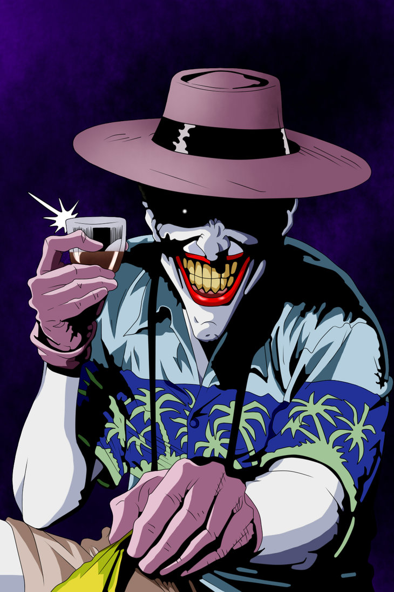

Themes and analysis (Título de artículo)
The book explores Moore's assertion that, psychologically, "Batman and the Joker are mirror images of each other" by delving into the relationship between the two. The story itself shows how the Joker and Batman came to terms with their respective life-altering tragedies, which both eventually lead to their present lives and confrontation. Critic Geoff Klock further explained that "both Batman and the Joker are creations of a random and tragic 'one bad day'. Batman spends his life forging meaning from the random tragedy, whereas the Joker reflects the absurdity of life, and all its random injustice".

The final scene (Título de artículo)
One instance a few years ago did, however, inspire renewed debate in regards to the comic. Appearing on Kevin Smith's fantastic Fatman on Batman podcast, writer Grant Morrison (the mastermind behind Arkham Asylum: A Serious House on a Serious Earth, Batman & Robin, Animal Man and other such books), optioned a theory regarding The Killing Joke's ending. Speaking to Smith, Morrison argued that:
"Killing Joke’s good. And I kind of like Killing Joke’s… we talk about this, no one gets the end, because Batman kills the Joker… that’s why it’s called the Killing Joke. The Joker tells the killing joke at the end, Batman reaches out and breaks his neck and then the laughter stops, and then the light goes out, because that was the last chance of them crossing that bridge. Alan wrote the ultimate Batman Joker story, because he finished it… the laughter stops, it abruptly stops. It’s quite obvious."